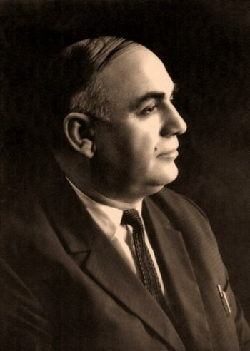

НАРОДНЫЙ ПОЭТ БАЛКАРИИ
Отарланы Керим
Керим
Отаров1912
1974
Поэзия, в которой живут
горы, время и человек.
«Я горд своей
дорогою земной…»
У каждого слова —
своя вечность.
Возвращайтесь к знакомым строкам.
Открывайте их на родном языке.
Находите в них себя.
Произведений с таким названием пока нет. Попробуйте другой запрос.
Не просто читать. Понимать каждую строку.
Услышать
самого поэта.
В голосе остаётся то, чего не передать
буквами: пауза, дыхание, интонация.
И присутствие человека.
Судьба народа.
Голос человека.
Рождённый в горном ауле Гюрхожан, Керим Отаров прошёл через войну, изгнание и возвращение. Его поэзия сохранила память о времени — и веру в человека.
Родной язык, фольклор и мировая литература встречаются в его произведениях. Этот архив — пространство, где знакомство с поэтом становится личным.
Начало пути. Родился в балкарском ауле Гюрхожан у подножия Эльбруса.
За словом —
целый мир.
Прикоснитесь к родному языку.
Выберите слово и откройте его смысл.
Тау
01 / 05Гора
Слово, с которого начинается знакомство с горным миром карачаево-балкарского языка.
Поэзия
объединяет.
Примеры событий
Продолжение —
в каждой новой встрече.